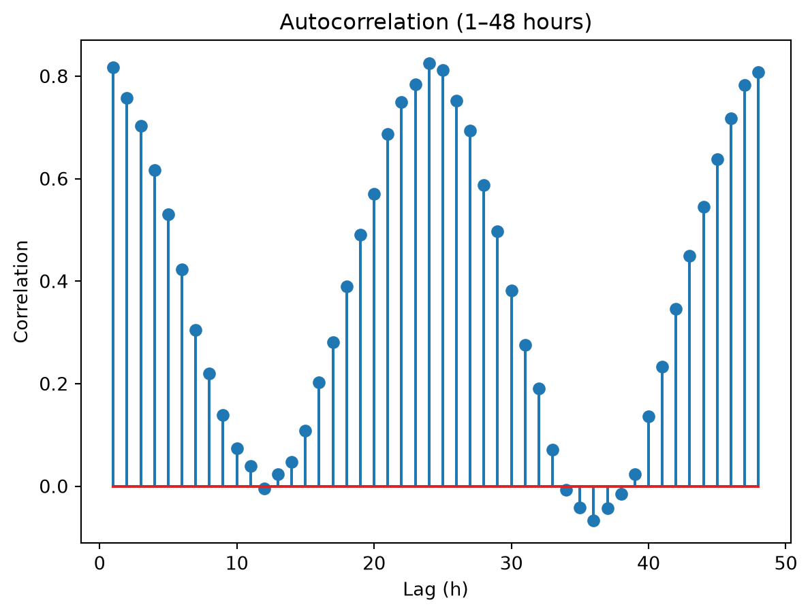
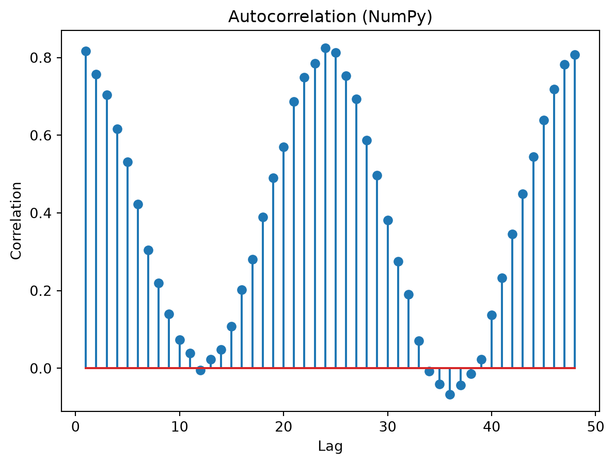

lags =range(1, 49)ac = [s.corr(s.shift(k)) for k in lags]plt.stem(list(lags), ac)plt.title("Autocorrelation (1–48 hours)")plt.xlabel("Lag (h)")plt.ylabel("Correlation")plt.show()

import numpy as npimport matplotlib.pyplot as plty = s.to_numpy()y = y - np.nanmean(y)def autocorr(y, k):return np.corrcoef(y[:-k], y[k:])[0,1]lags =range(1, 49)ac_np = [autocorr(y, k) for k in lags]plt.stem(list(lags), ac_np)plt.title("Autocorrelation (NumPy)")plt.xlabel("Lag")plt.ylabel("Correlation")plt.show()

7.4 6.4 Interpretation of Autocorrelation
Typical patterns:
Slowly decreasing curve → strong trend
Periodic peaks (e.g., at 24, 48, 72) → seasonality
Rapid drop toward 0 → weak dependence
WarningWarning
A trend can artificially increase autocorrelation.
If necessary, first detrend or difference the series.